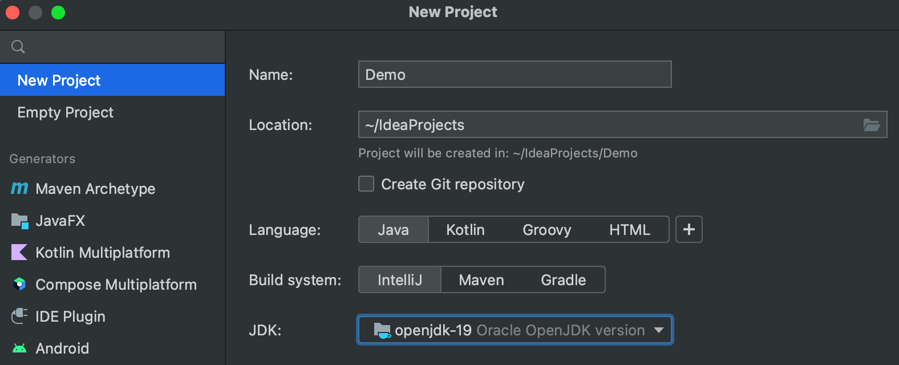
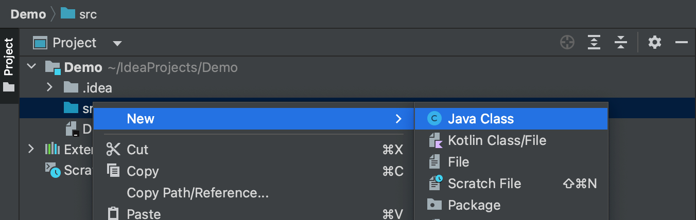
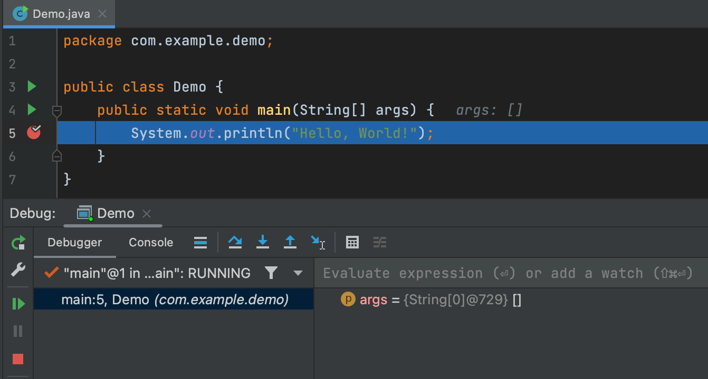
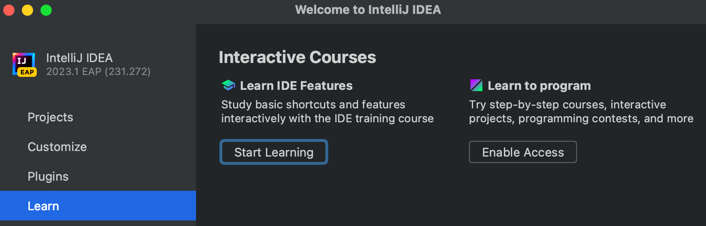

IntelliJ IDEA
Теорія
IntelliJ IDEA — це провідна IDE для Java і Kotlin від компанії JetBrains.
У галузі вона виділяється:
- Найдосконаліший контекстно-залежний редактор, який надає підказки щодо завершення коду під час введення тексту, забезпечує виправлення помилок і попереджень, а також дозволяє знаходити будь-що, від класів до вікон інструментів.
- Глибоке розуміння коду гарантує, що IDE зможе миттєво виявляти помилки та надавати відповідні пропозиції в будь-якому контексті.
- Досвід із коробки, що означає, що ви можете почати кодувати відразу з першого запуску. Важливі інструменти та широкий вибір підтримуваних мов у вас під рукою – жодних проблем із плагіном не виникає.
- Інструменти для спільної та віддаленої розробки.
IntelliJ IDEA випускається у двох версіях:
- IntelliJ IDEA Community Edition — це безкоштовна версія, яка містить більш ніж достатньо функцій, щоб задовольнити основні потреби більшості розробок на Java та Kotlin.
- IntelliJ IDEA Ultimate — це повнофункціональна комерційна версія, яка підтримує різні фреймворки та технології для розробки серверних і зовнішніх інтерфейсів. Вона пропонує розширений набір інструментів для оптимізації робочого процесу. Профілювання, інструменти бази даних і HTTP-клієнт доступні безпосередньо з коробки.
Щоб дізнатися більше про цю IDE, відвідайте офіційний вебсайт.
§1. Створіть свій перший проєкт
Давайте детальніше розглянемо, як працює IntelliJ IDEA. Для початку виконайте наведені нижче дії, щоб створити свою першу програму в IntelliJ IDEA.
1. Установіть IntelliJ IDEA Community Edition на свій комп’ютер і запустіть її.
2. Якщо в IntelliJ IDEA наразі не відкрито жодного проєкту, натисніть New Project / Новий проєкт у розділі Projects / Проєкти на екрані привітання. В іншому випадку виберіть File | New | Project.

3. У майстрі New Project / Новий проєкт виберіть New Project / Новий проєкт зі списку ліворуч. Існує також можливість створити порожній проєкт без підтримки мови.
4. Назвіть проєкт (наприклад, Demo) і за потреби змініть розташування за умовчанням.
5. У цьому підручнику ми не працюватимемо із системами контролю версій, тому залиште опцію Create Git repository / Створити сховище Git вимкненою.
6. Виберіть Java у Language та IntelliJ у Build system.
7. Щоб розробляти Java-додатки в IntelliJ IDEA, вам потрібен Java SDK (JDK). Ваша IDE автоматично заповнить поле JDK. Але ви можете змінити його, додати необхідний JDK зі свого комп’ютера або завантажити його.
8. IntelliJ IDEA створює проєкт. Після завершення цього процесу структуру вашого нового проєкту буде показано у вікні інструмента Project. Є два вузли верхнього рівня:
- Демо. Цей вузол представляє модуль вашого проєкту. Каталог .idea та файл Demo.iml використовуються для зберігання конфігураційних даних для вашого проєкту та модуля відповідно. Каталог src призначений для вашого вихідного коду.
- Зовнішні бібліотеки. Ця категорія представляє всі «зовнішні» ресурси, необхідні для вашої розробки. Там розміщені стандартні файли мови вашого проєкту. Ви також можете додати інші ресурси вручну.
§2. Напишіть свій перший код
Зараз ми напишемо простий фрагмент коду Java для демонстраційного проєкту.
Спочатку давайте створимо клас і пакет.
1. У вікні інструмента Project клацніть правою кнопкою миші на каталозі src, виберіть New, а потім виберіть Java Class.
2. У полі Name / Назва введіть com.example.demo.Demo та натисніть Enter. Ось як ви створюєте пакет і клас Demo в ньому. Пакети використовуються для групування класів, які належать до однієї категорії або надають схожу функціональність.

Разом із файлом IntelliJ IDEA згенерувала певний вміст для вашого класу. У цьому випадку IDE вставила оператор пакета та оголошення класу.
По-друге, давайте напишемо метод Main і викличемо метод println(). Ви можете почати вводити символи, а IDE підкаже вам про можливі варіанти коду. Ця функція називається доповненням коду. З його допомогою IntelliJ IDEA аналізує контекст і пропонує варіанти, які доступні з поточної позиції вставки.
Але в цьому посібнику спробуємо інший спосіб. Ми додамо методи з Live Templates – фрагменти коду (сніпети), які можна вставити у свій код.
1. Розмістіть каретку в рядку оголошення класу після відкриваючої дужки { і натисніть Enter, щоб почати новий рядок.
2. Введіть main і виберіть шаблон, який вставляє оголошення методу main().


Під час введення IntelliJ IDEA пропонує різні конструкції, які можна використовувати в поточному контексті. Ви можете переглянути список доступних живих шаблонів за допомогою ⌘J (macOS) або Ctrl+J (Windows, Linux).
3. Щоб викликати метод println(), введіть sout і натисніть Enter. Всередині дужок введіть: "Hello, World!".


Щиро вітаю! Ви написали свою першу програму Java на IntelliJ IDEA. Для отримання додаткової інформації ви завжди можете звернутися до повного Офіційного підручника по IntelliJ IDEA.
§3. Запустіть і налагодьте програму
Якщо у вас є готова програма, ви можете її запустити. Тоді її можна перевірити на наявність можливих проблем за допомогою відладчика. Давайте подивимося, як ці інструменти працюють.
Виконати:
1. Натисніть зелений трикутник Run button / Кнопка запуску  в канаві та виберіть Run 'Demo.main ()' / Запустити у спливаючому вікні. IDE почне компілювати ваш код.
в канаві та виберіть Run 'Demo.main ()' / Запустити у спливаючому вікні. IDE почне компілювати ваш код.

2. Ви побачите результат у вікні «Run», що з’явиться.
Налагодження:
1. Щоб перевірити програму за допомогою налагоджувача (дебагера), ви повинні спочатку встановити точку зупину (брекпойнт). Клацніть на жолоб у виконуваному рядку коду, де ви хочете встановити точку зупину. Або помістіть вставку на лінію та натисніть ⌘F8 (macOS) або Ctrl+F8 (Windows, Linux).
2. Щоб запустити налагоджувач, натисніть кнопку Bug / Помилка поруч із кнопкою Run / Запустити. Потім з’явиться вікно Debugger з результатом.
§4. Налаштуйте IntelliJ IDEA
Є багато налаштувань, які ви можете налаштувати відповідно до своїх побажань або потреб.
1. Щоб налаштувати IDE, виберіть IntelliJ IDEA | Preferences (Параметри) (macOS) або File | Settings (Налаштування) (Windows і Linux). Наприклад, перейдіть до Appearance & Behavior | Appearance (Зовнішній вигляд і поведінка | Зовнішній вигляд) та виберіть будь-яку тему на свій смак. У нашому випадку ми використовуємо тему Darcula.
2. Якщо ви хочете знайти щось конкретне в налаштуваннях, скористайтеся вікном пошуку, як показано нижче.

§5. Вивчіть додаткові функції IntelliJ IDEA
Ви можете продовжити вивчення IDE за допомогою корисних інтерактивних курсів безпосередньо в IntelliJ IDEA.
1. Виберіть розділ Learn (Навчання) на екрані Привітання та натисніть Start learning (Почати навчання). IDE відкриє демонстраційний проєкт із покроковими інструкціями, які проведуть вас через усі найбільш використовувані функції та інструменти, які пропонує IntelliJ IDEA.
§6. Висновок
Якщо підсумувати цей загальний вступ до IntelliJ IDEA, ми можемо сказати, що ця IDE вам ідеально підходить, якщо ви:
- Хочете почати кодувати лише через кілька хвилин після інсталяції та одразу отримати доступ до всіх важливих функцій.
- Хочете насолоджуватися роботою в потужному ергономічному редакторі, який може передбачити, який код вам потрібно написати в конкретному контексті, і пропонує виправлення можливих проблем у дорозі.
- Хочете налаштувати IDE відповідно до ваших потреб і смаку.
- Цінуєте швидку навігацію та миттєвий пошук.
Ми сподіваємося, що ви спробуєте IntelliJ IDEA, щоб дізнатися більше про її функції. Для отримання більш детальної інформації ви можете звернутися до IntelliJ IDEA Help (Довідки).
Ви також можете переглянути Урок на hyperskill.org.
Практичні завдання та відповіді
Подаються завдання та варіанти відповідей. Правильний варіант виділено синім кольором.
№1. Контекстні дії
Питання: IntelliJ IDEA може щось робити з контекстом біля курсору. Як можна використовувати цю функцію в ОС Windows?
Виберіть один варіант зі списку:
- Використання комбінації клавіш Alt+Enter ✔
- Створення нового проєкту
- Перехід до File | Settings
- Використання зміни до дії
- Створення нового файлу
Пояснення. Ви можете використовувати функцію IntelliJ IDEA, яка працює з контекстом біля курсору в ОС Windows, використовуючи клавіші Alt+Enter.
№2. Налаштування
Питання: Де можна налаштувати параметри IntelliJ IDEA?
Виберіть один варіант зі списку:
- Help
- IntelliJ IDEA | Preferences (macOS) або File | Settings (Windows та Linux) ✔
- View | Tool Windows
- File | Project Structure
Пояснення. Ви можете налаштувати параметри IntelliJ IDEA, перейшовши до IntelliJ IDEA | Preferences (Параметри), якщо ви використовуєте macOS або File | Settings (Файл | Налаштування), якщо ви використовуєте Windows або Linux.
№3. Тема
Питання: Припустімо, у нас є проєкт, відкритий в IntelliJ IDEA. Куди вам піти, щоб змінити тему на Darcula?
Виберіть один варіант зі списку:
- Help
- Tools
- File | Project Structure
- File | Settings for Windows and Linux, or IntelliJ IDEA | Preferences for macOS ✔
- View | Tool Windows
Пояснення. Щоб змінити тему на Darcula в IntelliJ IDEA, коли проєкт відкрито, потрібно перейти до File | Settings, якщо ви використовуєте Windows або Linux, або IntelliJ IDEA | Preferences, якщо ви використовуєте macOS. Потім на лівій панелі виберіть Appearance & Behavior | Appearance (Зовнішній вигляд і поведінка | Зовнішній вигляд) і виберіть тему Darcula зі спадного меню поруч із Theme (Темою).
№4. Сеанс налагодження
Питання: Шо потрібно зробити перед початком сеансу налагодження?
Виберіть один варіант зі списку:
- Запустіть свою програму
- Установіть точку зупину ✔
- Перевірте правопис
Пояснення. Перед запуском сеансу налагодження вам слід встановити точку зупину (брекпойнт).
№5. Запустіть програму
Питання: На які моменти потрібно звернути увагу, щоб програма запрацювала?
Виберіть один або кілька варіантів зі списку:
- виберіть правильну кольорову схему
- перевірте, чи містить програма основний метод ✔
- переконайтеся, що вихідний код знаходиться в каталозі src ✔
- виберіть JDK ✔
Пояснення. Щоб запустити програму, вам потрібно перевірити, чи програма містить основний метод, і вибрати JDK. Крім того, вам потрібно переконатися, що вихідний код знаходиться в каталозі src. Вибір правильної кольорової схеми не є обов’язковим для запуску програми.
№6. Розташування вихідного коду
Запитання: Коли ми створюємо проєкт Java в IntelliJ IDEA, де знаходиться вихідний код?
Виберіть один варіант зі списку:
- У вихідному каталозі або його підкаталогах
- У кореневому каталозі проєкту або його підкаталогах
- У каталозі src або його підкаталогах ✔
- У каталозі .idea або його підкаталогах
Пояснення. Коли ми створюємо проєкт Java в IntelliJ IDEA, вихідний код знаходиться в каталозі src або його підкаталогах.
№7. Старе золото
Питання: Якою була початкова назва Java?
Виберіть один варіант зі списку:
- Javax
- Oak ✔
- Train
Пояснення. Початкова назва Java була Oak (Дуб).
№8. Live Templates (Живі шаблони)
Питання: Що таке Live Templates (Живі шаблони)?
Виберіть один варіант зі списку:
- Дорожні карти для тестування в реальному часі
- Фрагменти коду, які можна вставити у свій код ✔
- Готові проєкти Java для початківців
Пояснення. Live Templates (Живі шаблони) — це фрагменти коду, які можна вставити у свій код.
№9. Структура
Питання: Де ви можете побачити його структуру після створення проєкту?
Виберіть один варіант зі списку:
- У редакторі
- У вікні інструмента Run (Виконати)
- У вікні інструментів Project (Проєкт) ✔
- У IntelliJ IDEA | Preferences (macOS) або File | Settings (Windows і Linux)
Пояснення. Після створення проєкту ви можете побачити його структуру у вікні інструментів Project.
№10. Що таке IntelliJ IDEA?
Питання: Що таке IntelliJ IDEA?
Виберіть один варіант зі списку:
- Мобільна гра, написана мовою Java
- Провідна IDE для Java та Kotlin від JetBrains ✔
- Онлайн-компілятор для Java, JavaScript і Kotlin
- Мобільна програма для розробки Java та інших мов JVM
Пояснення. IntelliJ IDEA є провідною IDE для мов Java та Kotlin від JetBrains.
№11. Вміст проекту
Запитання: з яких двох вузлів верхнього рівня складається кожен проєкт IntelliJ IDEA?
Виберіть один або кілька варіантів зі списку:
- Внутрішні бібліотеки
- Зовнішні бібліотеки ✔
- Helloword
- Проект ✔
Пояснення. Два вузли верхнього рівня, з яких складається кожен проєкт IntelliJ IDEA, — це проєкт і зовнішні бібліотеки.
- Вузол «Проєкт» містить усі файли та папки, які належать до проєкту. Це включає вихідний код, ресурси та скомпільовані класи.
- Вузол «Зовнішні бібліотеки» містить усі бібліотеки, які використовуються проєктом. Ці бібліотеки можуть бути бібліотеками сторонніх розробників або бібліотеками, створеними командою проєкту.
Що таке IntelliJ IDEA? Для чого це? Де використовується? Хто є автором і розробником?
IntelliJ IDEA — це інтегроване середовище розробки (IDE) для Java та інших мов JVM. Вона використовується для розробки програмних додатків, зокрема на Java та Kotlin. IntelliJ IDEA надає різноманітні функції, такі як доповнення коду, підсвічування синтаксису, рефакторинг та інструменти налагодження, щоб допомогти розробникам писати, тестувати та налагоджувати свій код ефективніше.
IntelliJ IDEA розроблено та підтримується JetBrains, компанією з розробки програмного забезпечення, розташованою в Празі, Чеська Республіка. Компанію було засновано в 2000 році Сергієм Дмитрієвим, і її основна увага приділяється створенню інструментів продуктивності для розробників програмного забезпечення.
IntelliJ IDEA використовується розробниками по всьому світу, зокрема окремими особами, малими підприємствами та великими корпораціями. Вона популярна серед Java-розробників завдяки розширеним функціям, простоті використання та інтеграції з іншими інструментами JetBrains, такими як Kotlin і TeamCity.